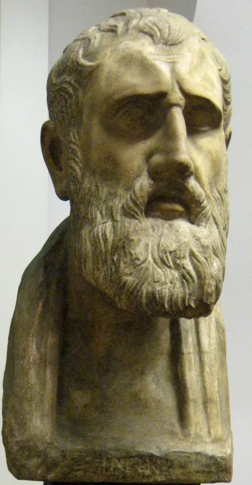
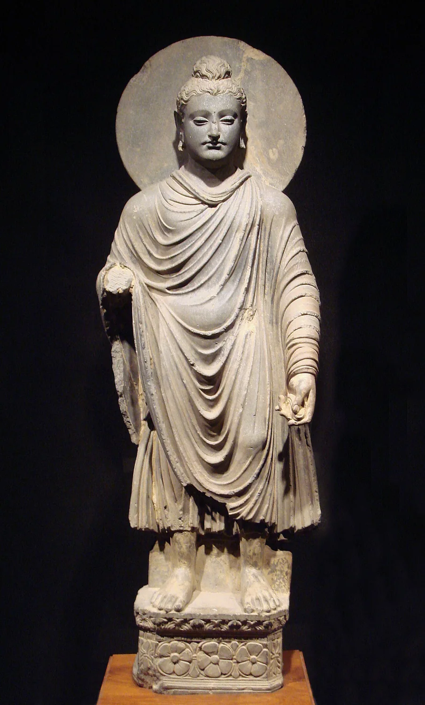
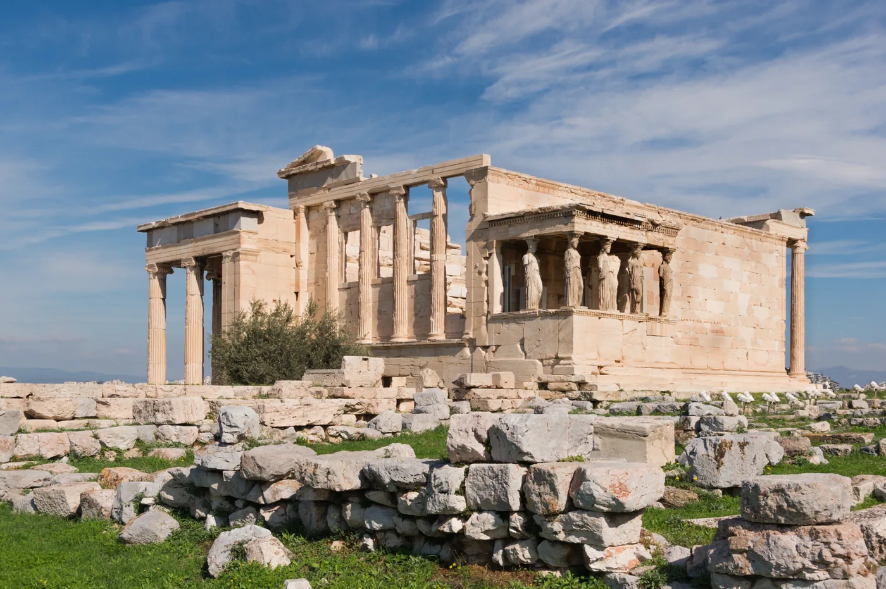
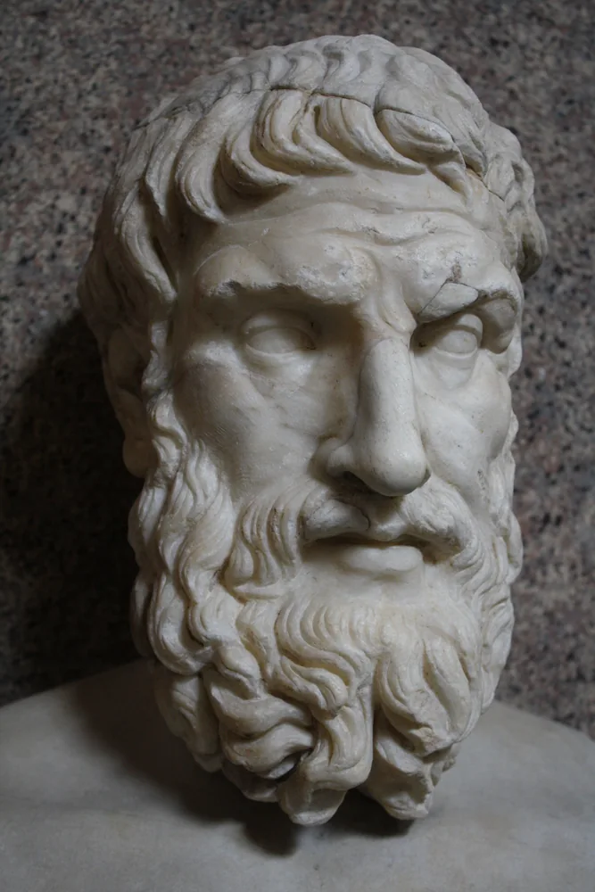
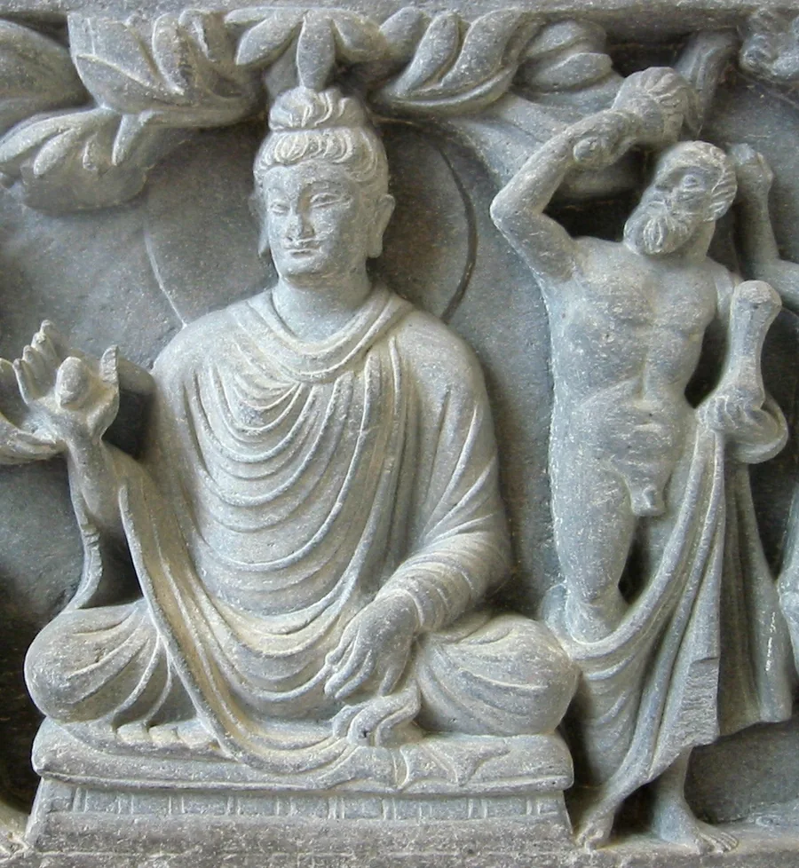
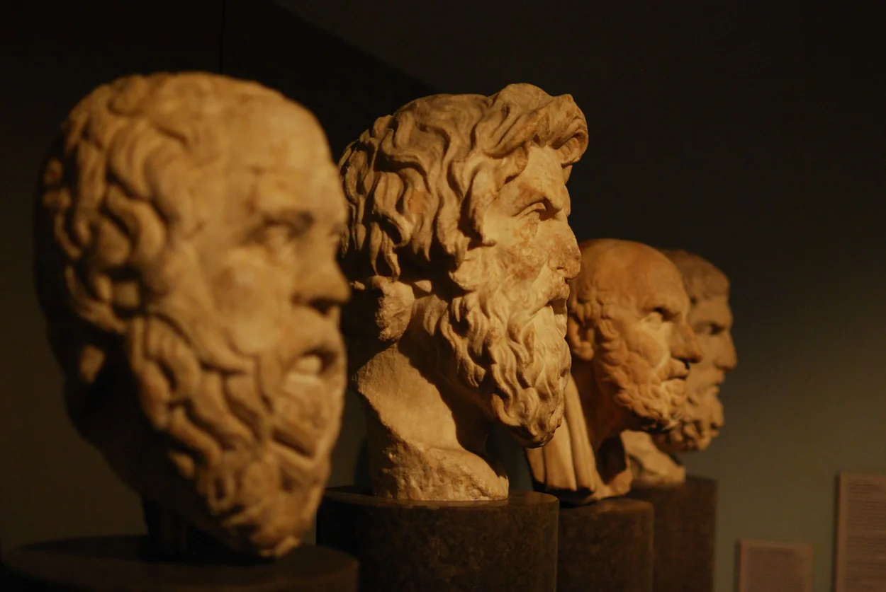
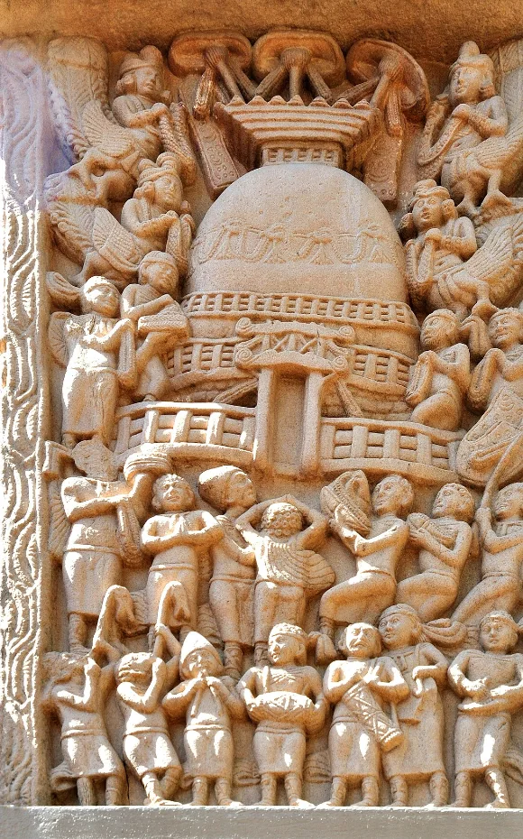

01 · Athens
Stoicism
Can virtue make a person happy even in misfortune?
Live according to reason and virtue. Examine judgments, distinguish what depends on you from what does not, and meet adversity with practical wisdom.
Four ancient philosophical traditions arrive at the court of King Menander, each claiming to offer a better way of life.
In this classroom role-playing game, students encounter Stoicism, Epicureanism, Buddhism, and Skepticism—not only as ideas to examine, but as practices to try and arguments to defend.


Gandharan Buddha sculpture and the Erechtheion, Athens. Historical artworks from different periods, illustrating the traditions explored in the game. About the images.
Ancient philosophical schools asked what makes a life go well—and devised ways of thinking, living, and practicing to answer that question. Their disagreements concern happiness, virtue, suffering, desire, death, and the limits of human knowledge.
This game invites participants to inhabit those disagreements: to make a case, test an exercise, confront an objection, and decide what survives philosophical scrutiny.
Each school provides an account of the good life, a set of practical disciplines, and a challenge to its rivals. Open a tradition below to see what is at stake.

Can virtue make a person happy even in misfortune?
Live according to reason and virtue. Examine judgments, distinguish what depends on you from what does not, and meet adversity with practical wisdom.

How much do we actually need to live well?
Seek freedom from needless fear and distress. Value friendship, cultivate modest pleasures, and question the promises of fame and power.

Can craving and attachment be brought to an end?
Examine suffering and its causes through ethical conduct, attention, and wisdom. Reflect on impermanence, non-self, and compassion.

What if certainty outruns our reasons?
Examine rival arguments fairly, expose unsupported assumptions, and withhold judgment where evidence does not warrant conviction.
The sculptures are used as historical visual references, not as authenticated portraits of each school’s representatives. About the images.
These resources offer deeper introductions, accessible books, and examples of how ancient philosophies are discussed and practiced today. Each tradition remains open to disagreement and reinterpretation.
A detailed account of Stoic ethics, logic, and physics.
Oxford University Press, 2008 · an approachable modern guide (not part of the later Guides to the Good Life series).
A non-profit project offering contemporary discussion and free practical exercises.
A philosopher’s account of Stoicism as a living ethical practice.
An introduction to the school’s ethics, atomism, and account of knowledge.
Oxford Guides to the Good Life · a contemporary presentation of Epicurean ethics.
Oxford University Press · a concise historical and philosophical overview.
A contemporary community of practitioners sharing readings and study materials.
A philosophical introduction to the early teachings, including non-self and suffering.
Oxford Guides to the Good Life · Buddhist philosophy alongside practices for daily life.
Contemporary secular Buddhist practice, discussion, and community.
Books and writings developing a modern secular interpretation of Buddhist practice.
Academic and Pyrrhonian skepticism, their arguments, and their differences.
Tarcher, 2026 · a contemporary guide grounded in Cicero’s Academic skepticism.
An essay on Pyrrhonian scepticism, intellectual humility, and the potential value of sceptical inquiry for democratic life.
The Stanford Encyclopedia entries are free to read. Book links lead to publisher information and may require purchase or library access. Contemporary authors and organizations illustrate different interpretations; their views are not official positions of the game. External links require an internet connection.

It is around 150 BCE. King Menander rules an Indo-Greek kingdom in northwestern South Asia. Greek and Indian intellectual traditions are part of a wider world of encounter and exchange.
Despite his military success, Menander remains troubled by a question no political victory can settle: How should he live? Four philosophical delegations seek to advise the king and win the court’s allegiance.
Designed around a preparation meeting and a court session, the game combines close reading, philosophical exercises, role-play, and structured debate.
Participants receive characters, read their sources, and prepare arguments and questions. Factions coordinate their presentations and practices.
Each philosophical school explains its way of life and leads a brief exercise designed to make its teaching concrete.
Court members face difficult personal dilemmas. Philosophers offer competing advice, defend their reasons, and answer objections.
Court members announce their allegiances. Menander awards patronage, and the factions assess the quality of the court’s philosophical deliberation.
The aim is not merely to win votes. It is to understand competing views well enough to use them, criticize them fairly, and ask whether a useful practice is also supported by a convincing philosophy.
All the documents for Ancient Philosophy as a Way of Life are available here as printable PDFs. Read individual materials or download the complete set.
Begin with the gamebook; use the manual to organize and run the class.
A guide to the historical setting, four traditions, gameplay, and primary-source readings.
Teaching guidance, classroom timing, role assignments, appendices, and debriefing.
Four briefings on each tradition’s arguments and philosophical practices.
Core principles, arguments, and two short philosophical practices.
Pleasure, friendship, death, and two short philosophical practices.
Suffering, not-self, compassion, and two short philosophical practices.
Skeptical inquiry and an exercise in developing serious objections.
Distribute the appropriate private role sheets to each player.
Characters and responsibilities for members of Menander’s court.
Private character backgrounds and objectives for the Stoic delegation.
Private character backgrounds and objectives for the Epicurean delegation.
Private character backgrounds and objectives for the Buddhist delegation.
Private character backgrounds and objectives for the Skeptic delegation.
Printable dilemmas, ballots, and tent cards for running the game.
Allegiance ballots for court members and royal patronage ballot for Menander.
Four faction rating ballots for the court’s philosophical deliberation.
Ancient Philosophy as a Way of Life is an educational role-playing game intended to make ancient ethical thought intellectually demanding, historically situated, and personally engaging.
The central pedagogical wager is simple: philosophical claims become more vivid when students must defend them against serious objections—and put them into practice, even briefly.
This game is inspired by Reacting to the Past, a role-playing approach to teaching in which students take on historical roles, study primary sources, and debate consequential questions. Ancient Philosophy as a Way of Life adapts that approach for a short, philosophy-centered classroom experience. It is an independent project, not an official Reacting to the Past publication.
© 2026 Javier Hidalgo. Except where otherwise noted, the original writing on this website and the original game materials authored by Javier Hidalgo are licensed under the Creative Commons Attribution–NonCommercial–ShareAlike 4.0 International (CC BY-NC-SA 4.0) license.
You may copy, share, and adapt this original material for noncommercial purposes, provided you credit the author, identify any changes, and distribute adaptations under the same license.
Third-party materials: Historical photographs, illustrations, credited quotations, source translations, and other content created by third parties are not covered by this license unless separately indicated. Their original licenses and permissions apply.
The photographs depict ancient sculptures, reliefs, and architecture associated with the Greek and South Asian worlds. They are visual references, not reconstructions of the fictional meeting at Menander’s court.
Photographs are used to evoke the traditions and their historical settings; they do not claim to portray the fictional philosophical delegates.